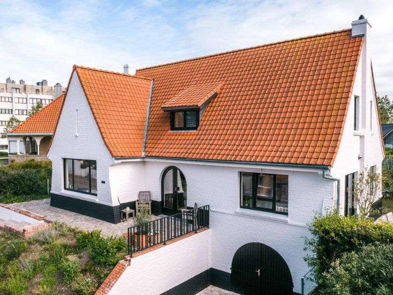

Schilderwerken buiten
Je gevel en buitenschrijnwerk,
strak geschilderd.
Een frisse gevel, mooie ramen en deuren, een poort als nieuw. We schilderen alles wat buiten staat, en beschermen het meteen tegen ons Belgische weer.
Wat schilderen we buiten?
Van gevel tot poolhouse.
Elke ondergrond vraagt een eigen aanpak. Een bakstenen gevel schilder je anders dan crepi, hout, metaal, PVC of aluminium.
- 01
Gevels en buitenmuren
- 02
Crepi
- 03
Ramen en deuren
- 04
Hout, PVC en aluminium
- 05
Kroonlijsten
- 06
Poorten en garagepoorten
- 07
Metalen poorten
- 08
Tuinhuizen en poolhouses
Onze aanpak
Eerst goed voorbereiden, dan schilderen.
- 01
Reinigen
Op vuil, mos of algen hecht verf slecht. We reinigen je gevel daarom eerst, met een druk die past bij de ondergrond, en behandelen hem tegen mos en algen.
- 02
Voorbereiden
We herstellen barsten en kleine beschadigingen, werken voegen bij en kitten aansluitingen netjes af. Wat niet geschilderd wordt, dekken we zorgvuldig af.
- 03
Schilderen
We kiezen de primer en verf die technisch passen bij jouw gevel of schrijnwerk. Voor donkere kleuren gebruiken we extra uv-bestendige verf.

Meer dan een frisse kleur
Een geschilderde gevel is beter beschermd.
Goede gevelverf houdt regen, vuil en vocht buiten. Je muur neemt minder water op, waardoor mos en algen minder snel vat krijgen. Zeker bij een oudere woning maakt dat een groot verschil: je huis ziet er weer modern uit en is beter beschermd.
Ook je ramen, deuren, kroonlijsten en poorten schuren en herstellen we eerst. Daarna werken we af met lak, beits of een ander systeem dat past bij het materiaal.
Wat kost het?
Wat kost een gevel schilderen?
De prijs hangt af van deze zes dingen. Daarom komen we altijd gratis ter plaatse kijken en krijg je een duidelijke offerte.
- De oppervlakte van de gevel
- De staat van de ondergrond
- De nodige reiniging
- Herstellingen aan voegen of barsten
- De bereikbaarheid en eventuele stellingen
- Het juiste verfsysteem
Veelgestelde vragen
Vragen over buitenschilderwerk.
Moet een gevel gereinigd worden voor hij geschilderd wordt?
Ja. Op vuil, mos of algen hecht verf slecht. We reinigen de gevel daarom altijd eerst, met een druk die past bij de ondergrond, en behandelen ze tegen mos en algen.
Kan je crepi schilderen?
Ja. Crepi vraagt wel een eigen aanpak: grondig reinigen, eventuele barsten herstellen en een gevelverf die past bij de structuur van de crepi.
Hoe lang blijft een geschilderde gevel mooi?
Met een goede voorbereiding en verf van topkwaliteit rekenen we op acht tot twaalf jaar of meer. Hoe meer regen en wind je gevel krijgt, hoe belangrijker de juiste verf.
Kunnen ramen in PVC of aluminium geschilderd worden?
Ja. Met de juiste voorbehandeling en een verf die bedoeld is voor dat materiaal, hecht de verf goed en blijft ze lang mooi.
Wanneer schilderen jullie buiten?
Van april tot oktober, op droge dagen boven ongeveer 10 graden. Regent het op een geplande dag, dan laten we je dat meteen weten en plannen we opnieuw in.
Wat kost een gevel schilderen?
Dat hangt af van de oppervlakte, de staat van de ondergrond, de reiniging, de herstellingen, de bereikbaarheid en het verfsysteem. Daarom komen we eerst gratis langs. Daarna krijg je een offerte met een vaste prijs.
Klaar voor een gevel die er weer mooi bij staat?
We komen gratis ter plaatse kijken, geven eerlijk advies en bezorgen je een duidelijke offerte.